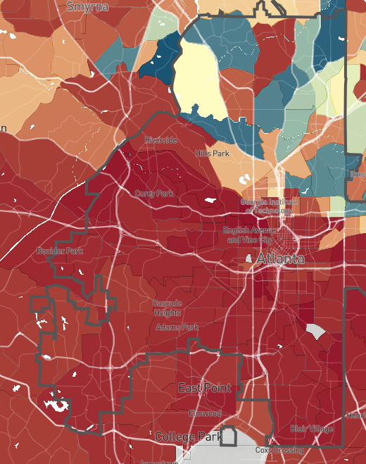

class: center, middle, inverse, title-slide .title[ # A River Runs Through It: ] .subtitle[ ## The Geography of Income Segregation ] --- <style type="text/css"> .cite { font-weight: bold; font-size: 0.75em; color: #BA0C2F; } </style> ## Question - Why, anecdotally, does it seem like "the south side" often contains the poorest neighborhoods of a city? -- - Is this true generally in the United States? -- - If so, *why??* -- - Could it have something to do with geographic features? - People prefer not to be downstream / downwind of manufacturing? - If so, we'd expect the poor side of town to frequently line up with the direction of flow of the city's river. --- ## Data Collection <a href="https://www.opportunityatlas.org/">  </a> --- ## Data Collection In the 50 largest cities in the United States, here's the neighborhood geometry breakdown: -- .pull-left[ <br> | | Num. Cities| %| |:------|-----------:|--:| |west | 4| 8| |center | 8| 16| |north | 10| 20| |east | 11| 22| |south | 17| 34| ] .pull-right[ **South Side:** Los Angeles, Chicago, Phoenix, San Antonio, San Diego, Dallas, Columbus, Boston, Detroit, Baltimore, Albuquerque, Fresno, Tucson, Atlanta, Colorado Springs, Virginia Beach, Long Beach **North Side:** New York, Philadelphia, San Jose, Charlotte, Denver, Nashville, Portland, Milwaukee, Miami, Tulsa **East Side:** Houston, Austin, Fort Worth, San Francisco, Seattle, Washington, Kansas City, Omaha, Raleigh, Bakersfield, Arlington **West Side:** Jacksonville, Louisville, Memphis, Oakland ] --- ## Data Analysis How *weird* is it that there are only 4 cities with poor west sides, but 17 cities with poor south sides? -- This is where probability and statistics comes in handy. - Is this a pattern you wouldn't expect to observe by chance alone? -- So we create a thought experiment:  -- Repeat that 42 times (one for each city with an obvious geographic divide): -- ``` east south west north 9 10 10 13 ``` --- ## Data Analysis If you repeat that exercise over and over, generating 10,000 sets of 42 randomly generated cities, how often are there only four cities with poor west sides? <img src="02a-sorting-bonus_files/figure-html/unnamed-chunk-5-1.png" width="600" style="display: block; margin: auto;" /> --- ## Data Analysis And what's the chance that you at least 17 cities with poor south sides? <img src="02a-sorting-bonus_files/figure-html/unnamed-chunk-6-1.png" width="600" style="display: block; margin: auto;" /> --- ## Data Collection: River Flow <img src="img/google-rivers.png" width="600" style="display: block; margin: auto;" /> --- ## Data Analysis: River Flow - Are poor neighborhoods more likely to be downriver? We can use similar statistical methods to answer this question. -- - To be extra generous to the hypothesis, if a river flows "southwest", I'll count both the south and west of the city as being downriver. - This means there's a roughly 3/8 chance that river flow and neighborhood orientation line up. -- Here are the actual results (out of 39 cities with major rivers flowing through them): |Downriver? | Num. Cities| |:----------|-----------:| |no | 20| |yes | 19| -- I leave the full statistical analysis as an exercise to the reader. --- ## Conclusion - As best I can tell, the poor side of US cities is most likely to be the south side, but not more likely than chance alone would suggest. - More data and more careful measurement could resolve the question more definitively. -- - There is no clear tendency for the poor side of a city to be downriver. -- - There is some [interesting evidence](https://www.theguardian.com/cities/2017/may/12/blowing-wind-cities-poor-east-ends) that cities in England are more likely to have poor *east* sides, perhaps due to the direction of prevailing winds.